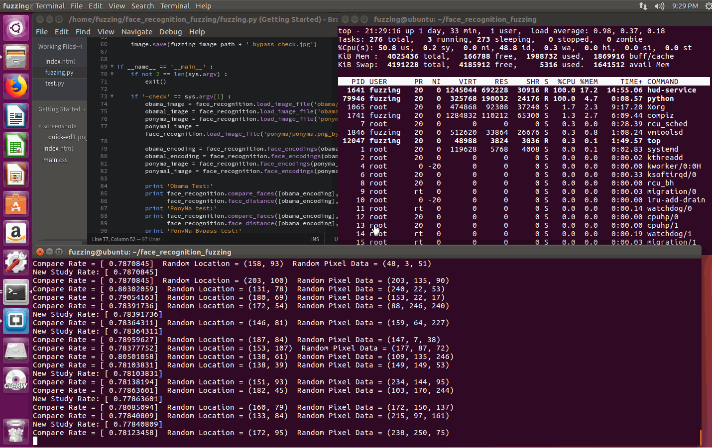
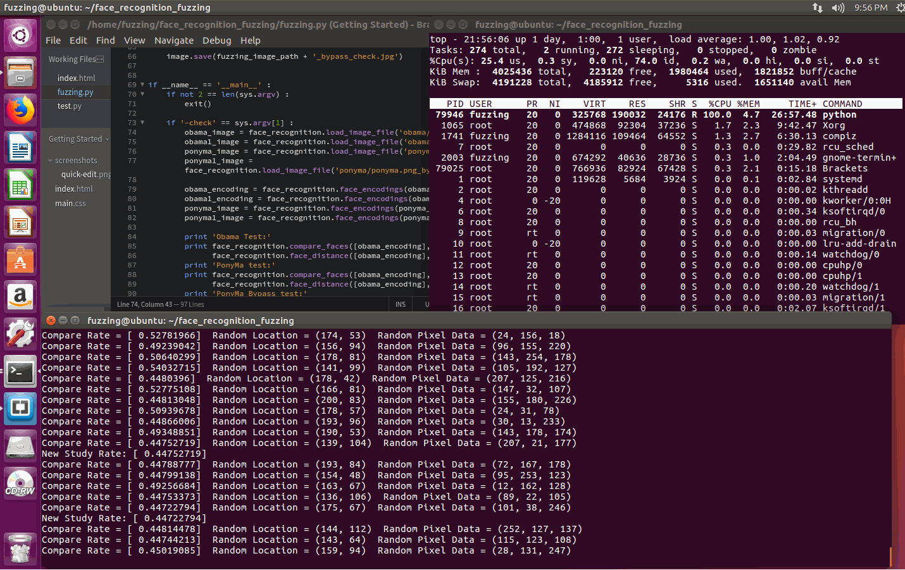
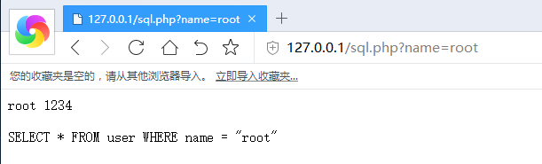
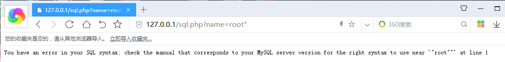
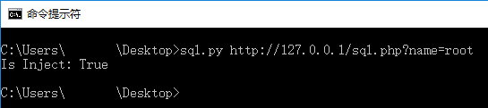
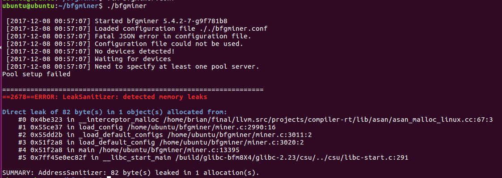

5. Fuzzing 模糊测试之异常检测
必备工具
Python ,Python-face_recognition ,PHP ,Python-Requests ,Pydasm ,Pydbg
Fuzzing 的异常检测
上一章的结尾部分提到,程序运行包含:输入->解析->内部逻辑处理->数据组装->输出,每一个部分都可能存在漏洞.总结一下Fuzzing 的异常检测分为两种:检测输出数据异常和检测运行异常.
检测输出数据异常
程序需要依赖用户输入,然后进行处理,最后再输出程序处理的数据.以人脸识别为例子,我们同样可以使用Fuzzing 来让识别算法判断两个人脸为同一个人.先来看一下Python 库face_recognition 是怎么做识别的.
def compare_faces(known_face_encodings, face_encoding_to_check, tolerance=0.6):
"""
Compare a list of face encodings against a candidate encoding to see if they match.
:param known_face_encodings: A list of known face encodings
:param face_encoding_to_check: A single face encoding to compare against the list
:param tolerance: How much distance between faces to consider it a match. Lower is more strict. 0.6 is typical best performance.
:return: A list of True/False values indicating which known_face_encodings match the face encoding to check
"""
return list(face_distance(known_face_encodings, face_encoding_to_check) <= tolerance)
compare_faces() 函数根据face_distance() 函数对比两张图片的相似度做对比,当相似度小于默认值0.6 时,数值越小两张人脸越相同,即判断为同一个人.让两张不是同一个人的识别成为同一个人,本质上是干扰人脸识别算法的判断概率.只需要对每一个像素点做极小的修改,就能影响数据点被分类的结果.必定存在一个与原本数据相差极小而被判断为任意一个类别的数据.简单地来说,通过在脸部附近随机生成一些像素点,会影响到最终识别结果.Fuzzer 构造如下
import random
from numpy import array
from PIL import Image
from PIL import ImageDraw
import face_recognition
def load_image_encoding(file_path) :
image = face_recognition.load_image_file(file_path)
image_encoding = face_recognition.face_encodings(image)[0]
return image_encoding
def get_face_location(file_path) :
image = face_recognition.load_image_file(file_path)
face_location = face_recognition.face_locations(image)[0]
return face_location
def fuzzing(source_image_path = 'obama/obama.jpg',fuzzing_image_path = 'ponyma/ponyma.png',target_compare_rate = 0.4) :
source_face_data = load_image_encoding(source_image_path)
image = Image.open(fuzzing_image_path)
draw = ImageDraw.Draw(image)
last_best_compare_rate = 1
face_location = get_face_location(fuzzing_image_path) # 获取人脸位置
random_fuzzing_location_top = face_location[0]
random_fuzzing_location_bottom = face_location[2]
random_fuzzing_location_left = face_location[3]
random_fuzzing_location_right = face_location[1]
while True :
random_pixel_data = (random.randint(0,255), # 随机像素值
random.randint(0,255),
random.randint(0,255))
random_location = (random.randint(random_fuzzing_location_left,random_fuzzing_location_right), # 随机位置
random.randint(random_fuzzing_location_top,random_fuzzing_location_bottom))
last_pixel_data = image.getpixel(random_location)
draw.point(random_location,random_pixel_data) # 在人脸的区域上随机画一个像素
fuzzing_face_image = image.convert('RGB')
fuzzing_face_array = array(fuzzing_face_image)
fuzzing_face_data = face_recognition.face_encodings(fuzzing_face_array)[0]
compare_rate = face_recognition.face_distance([source_face_data],fuzzing_face_data) # 重新对比两个人脸
print 'Compare Rate =',compare_rate,' Random Location =',random_location,' Random Pixel Data =',random_pixel_data
del fuzzing_face_image # 防止内存泄漏 ..
del fuzzing_face_array
del fuzzing_face_data
if compare_rate < target_compare_rate : # 两张人脸识别结果的判断率达到要求之后,就退出
break
if compare_rate < last_best_compare_rate : # 如果随机的像素没有提升识别率,那就恢复原来的那个像素,如果有提升识别率,那就保存这个像素
last_best_compare_rate = compare_rate
print 'New Study Rate:' ,last_best_compare_rate
else :
draw.point(random_location,last_pixel_data)
image.save(fuzzing_image_path + '_bypass_check.jpg')
obama_image = face_recognition.load_image_file('obama/obama.jpg')
obama1_image = face_recognition.load_image_file('obama/obama2.jpg')
ponyma_image = face_recognition.load_image_file('ponyma/ponyma.png')
ponyma1_image = face_recognition.load_image_file('ponyma/ponyma.png_bypass_check.jpg')
obama_encoding = face_recognition.face_encodings(obama_image)[0]
obama1_encoding = face_recognition.face_encodings(obama1_image)[0]
ponyma_image = face_recognition.face_encodings(ponyma_image)[0]
ponyma1_image = face_recognition.face_encodings(ponyma1_image)[0]
print 'Obama Test:'
print face_recognition.compare_faces([obama_encoding], obama1_encoding),\
face_recognition.face_distance([obama_encoding], obama1_encoding)
print 'PonyMa test:'
print face_recognition.compare_faces([obama_encoding], ponyma_image),\
face_recognition.face_distance([obama_encoding], ponyma_image)
print 'PonyMa Bypass test:'
print face_recognition.compare_faces([obama_encoding], ponyma1_image),\
face_recognition.face_distance([obama_encoding], ponyma1_image)
print 'Ready Fuzzing ..'
fuzzing()
运行过程与结果



看到这里,相信读者应该理解到:用户的输入是不可信的,精心构造的输入会影响程序的输出结果甚至远程代码执行.下面再举一个SQL 注入的例子,先来看看页面的源码
<?php
$connect = mysql_connect('localhost','root','root');
mysql_select_db('test', $connect);
$query = 'SELECT * FROM user WHERE name = "' . $_REQUEST['name'] . '"';
$result = mysql_query($query) or die('<pre>'.mysql_error().'</pre>');
while($row = mysql_fetch_array($result)) {
echo $row['0'] . ' ' . $row['1'];
echo '<br />';
}
echo '<br/>';
echo $query;
mysql_close($connect);
?>
访问URL:http://127.0.0.1/sql.php?name=root ,页面返回的数据如下

此时我们在root 后面加上" ,URL 变为:http://127.0.0.1/sql.php?name=root" ,再次访问链接

可以看到,现在SQL 语句出现异常了.对于URL 进行做SQL 注入Fuzzing ,我们通过' " 这两个符号插入到URL 的参数里来判断能否导致SQL 字符串闭合异常.Fuzzer 代码如下:
import sys
import requests
def get_url_path(url) :
argument_offset = url.find('?')
if -1 == argument_offset :
return False
url = url[ : argument_offset ]
return url
def get_url_argument(url) :
argument_offset = url.find('?')
if -1 == argument_offset :
return False
url = url[ argument_offset + 1 : ]
argument = url.split('&')
return argument
def check_url_inject(url_path,url_argument) :
sql_inject_flag = [ '\'' , '"' ]
sql_inject_error_flag = 'SQL syntax'
inject_result = False
for url_argument_index in url_argument :
for sql_inject_flag_index in sql_inject_flag :
responed = requests.get(url_path + '?' + url_argument_index + sql_inject_flag_index)
if not -1 == responed.text.find(sql_inject_error_flag) :
inject_result = True
break
return inject_result
if __name__ == '__main__' :
if not 2 == len(sys.argv) :
print 'sql.py URL'
exit()
url = sys.argv[1]
url_argument = get_url_argument(url)
url_path = get_url_path(url)
print 'Is Inject:' ,check_url_inject(url_path,url_argument)
运行结果如下

同样的原理,我们来做WAF 检测,示例URL:https://cloud.tencent.com/ .如果URL 里面还有敏感Payload 时,腾讯云的WAF 会返回501 的回应,否则会返回正常的请求
import sys
import requests
def check_waf(url_path) :
responed = requests.get(url_path + '?test=<script>')
if 501 == responed.status_code :
return True
return False
if __name__ == '__main__' :
if not 2 == len(sys.argv) :
print 'sql.py URL'
exit()
print 'Has WAF:' ,check_waf(sys.argv[1])
基于这段检测数据输出的代码,我们可以来做WAF Fuzzing 测试,看看哪些Payload 是无法被拦截的,关于WAF 的Fuzzing 以后再写一些东西
检测运行异常
检测运行异常在二进制上应用比较多,回顾上一章的Python 运行环境Fuzzing ,Fuzzer 只做了一个数据输入的生成,具体崩溃点还不知道在哪个位置,现在我们就使用PyDbg 和PyDasm 来自动化检测异常,关于PyDbg 我整理过一个使用文档,更多信息可以参考这里:https://github.com/lcatro/PyDbg_Document .下面使用PyDbg 来编写Python 运行环境Fuzzing 的异常检测模块
EXCEPTION_STACK_OVERFLOW=0xC00000FD # 栈溢出异常,这个值PyDbg 里没有,是自己加上去的
def get_exception(EXCEPTION) : # 判断异常类型
if EXCEPTION==EXCEPTION_STACK_OVERFLOW :
return 'EXCEPTION_STACK_OVERFLOW'
elif EXCEPTION==pydbg.defines.EXCEPTION_ACCESS_VIOLATION :
return 'EXCEPTION_ACCESS_VIOLATION'
elif EXCEPTION==pydbg.defines.EXCEPTION_GUARD_PAGE :
return 'EXCEPTION_GUARD_PAGE'
return 'Unknow Exception!'
def get_instruction(self,address) : # 获取指定地址附近的汇编代码
for ins in self.disasm_around(address,10) :
if ins[0]==address :
print '->Add:'+str(hex(ins[0]))[:-1]+'-'+ins[1]
else :
print ' Add:'+str(hex(ins[0]))[:-1]+'-'+ins[1]
def format_output(memory_data) : # 格式化输出内存数据
output_string=''
for memory_data_index in memory_data :
output_string+=str(hex(ord(memory_data_index)))+' '
return output_string
def dump_crash(self,EXCEPTION,EIP,EAX,EBX,ECX,EDX,ESP,EBP,ESI,EDI,instruction) : # 输出崩溃信息
print 'WARNING! Exploit:',get_exception(EXCEPTION),str(hex(EIP))[:-1],instruction,'\n'
get_instruction(self,EIP)
print ''
print 'EAX:'+str(hex(EAX))[:-1],'EBX:'+str(hex(EBX))[:-1],'ECX:'+str(hex(ECX))[:-1],'EDX:'+str(hex(EDX))[:-1],'ESP:'+str(hex(ESP))[:-1],'EBP:'+str(hex(EBP))[:-1],'ESI:'+str(hex(ESI))[:-1],'EDI:'+str(hex(EDI))[:-1]
print 'Easy Debug Viewer:'
print 'command:-r %regesit% (look regesit) ;-a %address% (look memory address) ;-u %address% (get instruction) ;-quit (will exit)'
while True : # 这里有个内置调试器,支持一些手工调试功能
try :
command=raw_input('->')
if command[:2]=='-r' : # 获取寄存器
print str(hex(self.get_register(str.upper(command[3:]))))[:-1]
elif command[:2]=='-a' : # 获取数据
dump_data=self.read(eval(command[3:]),DUMP_DATA_LENGTH)
print format_output(dump_data)
print dump_data
elif command[:2]=='-u' : # 获取代码
get_instruction(self,eval(command[3:]))
elif command[:5]=='-quit' : # 退出
break
except :
print 'Making a Except may input a error data'
def check_valueble_crash(self,EXCEPTION) : # 获取异常崩溃信息
EIP=self.get_register('EIP')
EAX=self.get_register('EAX')
EBX=self.get_register('EBX')
ECX=self.get_register('ECX')
EDX=self.get_register('EDX')
ESP=self.get_register('ESP')
EBP=self.get_register('EBP')
ESI=self.get_register('ESI')
EDI=self.get_register('EDI')
instruction=self.disasm(EIP)
if 'call'==instruction[0:4] :
dump_crash(self,EXCEPTION,EIP,EAX,EBX,ECX,EDX,ESP,EBP,ESI,EDI,instruction)
elif 'mov'==instruction[0:3] :
dump_crash(self,EXCEPTION,EIP,EAX,EBX,ECX,EDX,ESP,EBP,ESI,EDI,instruction)
elif 'pop'==instruction[0:3] :
dump_crash(self,EXCEPTION,EIP,EAX,EBX,ECX,EDX,ESP,EBP,ESI,EDI,instruction)
elif 'push'==instruction[0:4] :
dump_crash(self,EXCEPTION,EIP,EAX,EBX,ECX,EDX,ESP,EBP,ESI,EDI,instruction)
elif EXCEPTION==EXCEPTION_STACK_OVERFLOW :
dump_crash(self,EXCEPTION,EIP,EAX,EBX,ECX,EDX,ESP,EBP,ESI,EDI,instruction)
def crash_recall_guard_page(self) : # 捕获程序异常的回调函数,参数self 是Pydbg 的对象
check_valueble_crash(self,pydbg.defines.EXCEPTION_GUARD_PAGE)
def crash_recall_access_violation(self) :
check_valueble_crash(self,pydbg.defines.EXCEPTION_ACCESS_VIOLATION)
def crash_recall_exit_process(self) :
check_valueble_crash(self,pydbg.defines.EXIT_PROCESS_DEBUG_EVENT)
def crash_recall_stack_overflow(self) :
check_valueble_crash(self,EXCEPTION_STACK_OVERFLOW)
if __name__ == '__main__' :
while True :
code_object = make_code_object(make_opcode_stream())
save_to_pyc('python_fuzzing.tmp.pyc',code_object)
debugger = pydbg.pydbg() # 初始化PyDbg
debugger.set_callback(pydbg.defines.EXCEPTION_ACCESS_VIOLATION,crash_recall_access_violation) # 设置异常回调
debugger.set_callback(pydbg.defines.EXCEPTION_GUARD_PAGE,crash_recall_guard_page)
debugger.set_callback(pydbg.defines.EXIT_PROCESS_DEBUG_EVENT,crash_recall_exit_process)
debugger.set_callback(EXCEPTION_STACK_OVERFLOW,crash_recall_stack_overflow)
debugger.load('C:\\Python27\\python.exe','python_fuzzing.tmp.pyc') # 把生成的样本传递进来Fuzzing
debugger.run() # 启动调试
time.sleep(3)
del debugger # 删除PyDbg
运行效果

PyDbg 不是一个好的选择,因为有一些buffer overflow 必须要改写到其他数据并且又要被引用才会触发异常,事实上有很多情况是越界读写并没有被检测出来.最好的选择还是使用ASAN ,ASAN 自带有很强大的内存检测方式,ASAN 需要在编译的时候使用-fsanitize=address 参数引入,但是使用ASAN 需要依赖源码.在没有源码只有执行文件的情况下,linux 平台使用valgrind ,windows 平台使用gflags 来做内存异常检测.
使用ASAN 做检测就方便很多了,下面是ASAN 检测内存泄漏和越界的例子(检测程序为bfgminer)
